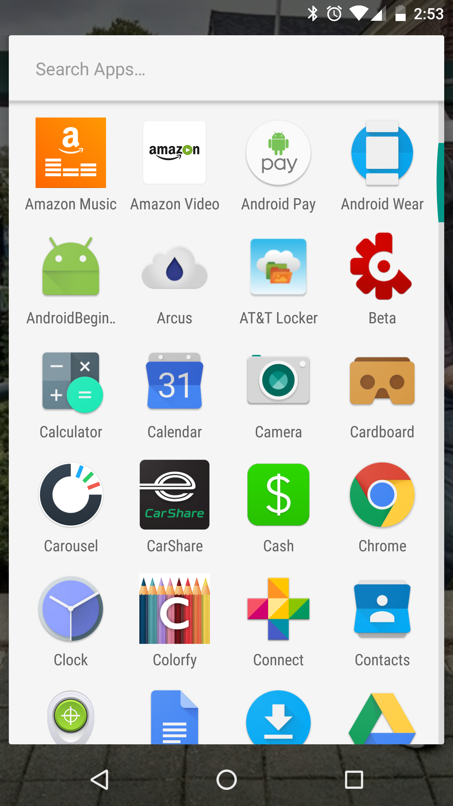
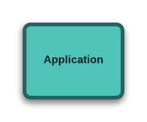
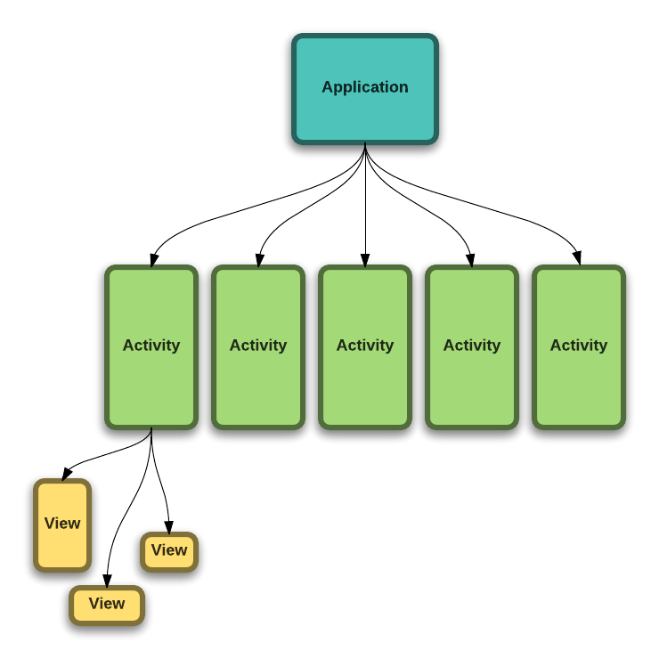
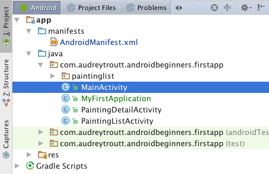

Application
This is an app, also known as an Application

Now that you have been introduced to Android Studio, let's dissect an app!
This is an app, also known as an Application
Every app has one Application class
An app usually has many screens.
These are called Activities.

Here's a screen from our app. It is defined by an Activity class you'll see later.

An Activity usually has many views

An Activity usually has many views
What does all this mean?
package com.audreytroutt.androidbeginners.firstapp;
import android.app.Application;
public class MyFirstApplication extends Application {
int toastLength = Toast.LENGTH_LONG;
@Override
public void onCreate() {
super.onCreate();
showToast("I have been created!");
}
public void showToast(String message) {
Toast.makeText(this, message, Toast.LENGTH_LONG).show();
}
}
What does all this mean?
package com.audreytroutt.androidbeginners.firstapp;
import android.app.Application; // import
public class MyFirstApplication extends Application { // class
int toastLength = Toast.LENGTH_LONG; // field
@Override
public void onCreate() { // method
super.onCreate();
showToast("I have been created!");
}
public void showToast(String message) { // method
Toast.makeText(this, message, Toast.LENGTH_LONG).show();
}
}
Anything after // is a comment in Java.
// This is a commentEvery line of code must end with a semi-colon;
int numberOfErrors = 0;Most things in Java are object.
A class is the definition of an object in Java
// this is a class
public class MyFirstApplication extends Application {
// your fields and methods go in here
}All of your code goes inside of classes.
A method defines the behavior of your class.
Everything your app does will be defined inside of methods inside of classes.
public void showToast(String message) { // this is a method
Toast.makeText(this, message, toastLength).show();
}
A field holds some data for your object.
public class MyFirstApplication extends Application {
int toastLength; // this is a field
public void showToast(String message) {
Toast.makeText(this, message, toastLength).show();
}
}
PRO TIP: always put your fields at the top of your class, above any methods.
Up at the top above the class body there are two things you will see: the package and import declarations.
package com.audreytroutt.androidbeginners.firstapp;
import android.app.Application;
import android.widget.Toast;
import java.util.Date;
package is like a folder path to your class--it will be auto-generated for you.
import is used to include other code into your class.
Let's dissect an app!
This is an app, also known as an Application
Your application is always represented in your Application's Manifest, AndroidManifest.xml.

The Android Manifest is an XML file that declares things like the name of your Application, what Activities it includes, and which Activity should be displayed on launch.
<?xml version="1.0" encoding="utf-8"?>
<manifest xmlns:android="http://schemas.android.com/apk/res/android"
package="com.audreytroutt.androidbeginners.firstapp">
<application
android:allowBackup="true"
android:icon="@mipmap/ic_launcher"
android:label="@string/app_name"
android:supportsRtl="true"
android:theme="@style/AppTheme"
android:name=".MyFirstApplication">
<activity
android:name=".MainActivity"
android:label="Welcome to the First App!"
android:theme="@style/AppTheme.NoActionBar">
<intent-filter>
<action android:name="android.intent.action.MAIN" />
<category android:name="android.intent.category.LAUNCHER" />
</intent-filter>
</activity>
<activity
android:name=".PaintingListActivity"
android:label="Paintings (List)"
android:parentActivityName=".MainActivity">
</activity>
<activity
android:name=".PaintingDetailActivity"
android:parentActivityName=".MainActivity">
</activity>
</application>
</manifest>
An instance of your Application class is created when your app launches and sticks around until your app is stopped.
You are not required to create your own Application class implementation. There is a default that works well enough for simple use cases.
If you do create your own implementation it has to extend android.app.Application. It will look something like this:
package com.audreytroutt.androidbeginners.firstapp;
import android.app.Application;
public class MyFirstApplication extends Application {
@Override
public void onCreate() {
super.onCreate();
// At this point my first application was just created
}
}
As we learned earlier, an app can have many Activities.
Here's a screen from our app.
Activities are registered in your Application Manifest
Here you can see three Activities for my app.
<?xml version="1.0" encoding="utf-8"?>
<manifest xmlns:android="http://schemas.android.com/apk/res/android"
package="com.audreytroutt.androidbeginners.firstapp">
<application
android:allowBackup="true"
android:icon="@mipmap/ic_launcher"
android:label="@string/app_name"
android:supportsRtl="true"
android:theme="@style/AppTheme"
android:name=".MyFirstApplication">
<!-- Here's the first Activity -->
<activity
android:name=".MainActivity"
android:label="Welcome to the First App!"
android:theme="@style/AppTheme.NoActionBar">
<intent-filter>
<action android:name="android.intent.action.MAIN" />
<category android:name="android.intent.category.LAUNCHER" />
</intent-filter>
</activity>
<activity
android:name=".PaintingListActivity"
android:label="Paintings (List)"
android:parentActivityName=".MainActivity">
</activity>
<activity
android:name=".PaintingDetailActivity"
android:parentActivityName=".MainActivity">
</activity>
</application>
</manifest>
Let's take a look at our MainActivity.
HINT: The name MainActivity can be anything you want. It's only by convention that the name has "Activity" in it. The only requirement is that the class extends Activity.
Inside an Activity class you again see an onCreate method. This is often where you set up what is displayed on the screen.
public class MainActivity extends AppCompatActivity implements NavigationView.OnNavigationItemSelectedListener {
@Override
protected void onCreate(Bundle savedInstanceState) {
super.onCreate(savedInstanceState);
setContentView(R.layout.activity_main);
Toolbar toolbar = (Toolbar) findViewById(R.id.toolbar);
setSupportActionBar(toolbar);
FloatingActionButton fab = (FloatingActionButton) findViewById(R.id.fab);
fab.setOnClickListener(new View.OnClickListener() {
@Override
public void onClick(View view) {
Snackbar.make(view, "Hello, Test!", Snackbar.LENGTH_LONG)
.setAction("Action", null).show();
}
});
DrawerLayout drawer = (DrawerLayout) findViewById(R.id.drawer_layout);
ActionBarDrawerToggle toggle = new ActionBarDrawerToggle(
this, drawer, toolbar, R.string.navigation_drawer_open, R.string.navigation_drawer_close);
drawer.setDrawerListener(toggle);
toggle.syncState();
NavigationView navigationView = (NavigationView) findViewById(R.id.nav_view);
navigationView.setNavigationItemSelectedListener(this);
}
@Override
public void onBackPressed() {
DrawerLayout drawer = (DrawerLayout) findViewById(R.id.drawer_layout);
if (drawer.isDrawerOpen(GravityCompat.START)) {
drawer.closeDrawer(GravityCompat.START);
} else {
super.onBackPressed();
}
}
@Override
public boolean onCreateOptionsMenu(Menu menu) {
// Inflate the menu; this adds items to the action bar if it is present.
getMenuInflater().inflate(R.menu.main, menu);
return true;
}
@Override
public boolean onOptionsItemSelected(MenuItem item) {
// Handle action bar item clicks here. The action bar will
// automatically handle clicks on the Home/Up button, so long
// as you specify a parent activity in AndroidManifest.xml.
int id = item.getItemId();
//noinspection SimplifiableIfStatement
if (id == R.id.action_settings) {
return true;
}
return super.onOptionsItemSelected(item);
}
@Override
public boolean onNavigationItemSelected(MenuItem item) {
// Handle navigation view item clicks here.
int id = item.getItemId();
if (id == R.id.nav_camera) {
// Handle the camera action
} else if (id == R.id.nav_list) {
Intent listIntent = new Intent(this, PaintingListActivity.class);
startActivity(listIntent);
}
DrawerLayout drawer = (DrawerLayout) findViewById(R.id.drawer_layout);
drawer.closeDrawer(GravityCompat.START);
return true;
}
}

From developer.android.com/reference/android/app/Activity.html#ProcessLifecycle
There will also be methods for any of the actions that can be taken with the views (buttons, toggles, menus, etc.) on the screen.
@Override
public void onBackPressed() {
DrawerLayout drawer = (DrawerLayout) findViewById(R.id.drawer_layout);
if (drawer.isDrawerOpen(GravityCompat.START)) {
drawer.closeDrawer(GravityCompat.START);
} else {
super.onBackPressed();
}
}
@Override
public boolean onNavigationItemSelected(MenuItem item) {
int id = item.getItemId();
if (id == R.id.nav_camera) {
} else if (id == R.id.nav_list) {
Intent listIntent = new Intent(this, PaintingListActivity.class);
startActivity(listIntent);
}
DrawerLayout drawer = (DrawerLayout) findViewById(R.id.drawer_layout);
drawer.closeDrawer(GravityCompat.START);
return true;
}Now we can talk about how you navigate between Activities: Intents!
Navigating between Activities is done with the use of Intents, like this:
Intent listIntent = new Intent(this, PaintingListActivity.class);
startActivity(listIntent);An Intent is a message to the Android operating system that we'd like to start the Activity named in the Intent.
HINT: Intents can only be created with a "context", which for us means an Activity. The startActivity method is defined for us in the Activity base class that we extend.
Intents are useful for more than switching between screens. They are the way to kick off all sorts of actions from your app:
Reference: common intents
Here's an example of a method that creates an intent to send an email:
public void composeEmail(String[] addresses, String subject) {
Intent intent = new Intent(Intent.ACTION_SENDTO);
intent.setData(Uri.parse("mailto:")); // only email apps
intent.putExtra(Intent.EXTRA_EMAIL, addresses);
intent.putExtra(Intent.EXTRA_SUBJECT, subject);
if (intent.resolveActivity(getPackageManager()) != null) {
startActivity(intent);
}
}Here's an example of a method that creates an intent to capture a photo with the camera app:
static final int REQUEST_IMAGE_CAPTURE = 1;
private void dispatchTakePictureIntent() {
Intent takePictureIntent = new Intent(MediaStore.ACTION_IMAGE_CAPTURE);
if (takePictureIntent.resolveActivity(getPackageManager()) != null) {
startActivityForResult(takePictureIntent, REQUEST_IMAGE_CAPTURE);
}
}When you call startActivityForResult you have to pass a code that you can use to match the response with your request.
@Override
protected void onActivityResult(int requestCode, int resultCode, Intent data) {
if (requestCode == CAPTURE_IMAGE_ACTIVITY_REQUEST_CODE && resultCode == RESULT_OK) {
// A picture was just taken, let's display that in our image view
editImage();
updateMainImageFromFile();
}
}